Documentation
Started in November 2010
By Stefano Giliberti
winterbits.com
kompulsive@gmail.com
Thank you for buying my theme. If you have any questions that are beyond the scope of this help file or any feature request, please feel free to contact me via my user page here or sending me a direct message to the email address on your left.
Table of Contents
- Installation
- Setting up a Website
- Shortcodes
- Widgets
- Extend
- Page Samples
- CSS and jQuery
- PSD Source Files
- Extras
- Ending Credits
Theme Installation
Installing a WordPress theme is pretty simple, and there are two ways to do it:
- The FTP Upload, you just unzip the "Carta.zip" file and upload the "Carta" folder in your
wp-content/themesfolder using your favourite ftp application (like FileZilla or CyberDuck). - Via WordPress, going to your Themes section, then selecting the "Install Themes" tab and choosing as method the Upload.
Be sure to upload the "Carta.zip" file, not the entire Carta Folder.
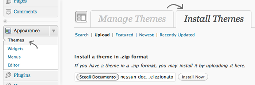
The last thing you need to do is activate the theme. Go to the Themes section in the Appearance settings, then click the Activate link below the Carta thumbnail.
Permissions
This Theme makes an extensive use of TimThumb, a PHP script for images resizing. A great feature of this script is that it creates a Cache copy of every resized image to improve the loading performances. To ensure that the script has the permission to write these copies you need to set the permissions on the cache and temp folder.
- Open your favourite FTP application
- Go to your
wp-content/themesfolder, thenCarta/engine/includes - Set the
777permissions on thecacheandtempfolder (usually accessible with a right click)
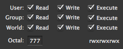
1. Aesthetics and Brand - top
Creating a new Website, the first thing you may want to do is to adapt the visual aspect to your needs.
In Carta, there are many ways to personalize the look and feeling of the theme.
The Theme
Carta includes many Themes completely different from each other and switching from a theme to another its the more easy thing to do.
From the  Options Panel, select the tab, then choose the theme you prefer from the "Theme Stylesheet" select box under the "Aesthetics" section. To save the changes, click on the "Save Changes" button.
Options Panel, select the tab, then choose the theme you prefer from the "Theme Stylesheet" select box under the "Aesthetics" section. To save the changes, click on the "Save Changes" button.
The Headings Font
The Typography is the second big aspect of the style of your website. This theme comes with 15 pre-installed fonts and with the possibility to add a new one whenever you want. (See "Adding a new Font" for more info)
To change your Headings font, select the tab, then choose a font from the "Cufón font" select box under the "Aesthetics" section.
You can also edit the Cufón Selectors List, this list contains all the text elements that will be replaced with the font you have chosen.
The Brand
Last but not least, what makes your website really recognizable, the Logo.
You can find all the Branding options in the tab.
There are two ways of setting your logo:
- Using an Image
Under the "Logo Image" section, you can directly upload your logo image and it will be applied instantly. - Using a Textual Logo
Checking the "Use a textual logo" checkbox under the "Plain Text Logo" section, you can type anything you want and you logo will be displayed as text with the Heading font you've chosen.
Of course, any logo is different and it has its own dimensions and spacing. This theme offers you the possibility to adjust any Width, Height, Top Spacing and Font Size (in case you're using the Textual Logo) property directly from the Back-End.
Under the "Adjustements" section, in the tab, you'll find this:
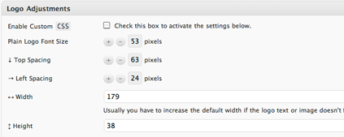
When you're done, always remember to click the Save Changes button.
2. The Menu - top
Carta uses the new WordPress 3 Menu System, with a 3 Levels Dropdown support.
In WordPress 3, to add and configure a new menu, go to the Menus panel in the Appareance settings and create a new menu, then apply it to the "Head Menu" Location.
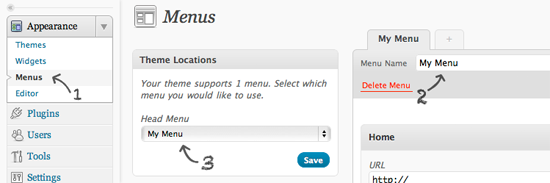
As you may have noticed, this theme also lets you add a sub-title for each first level menu item. That text is actually the Title Attribute of the menu item.
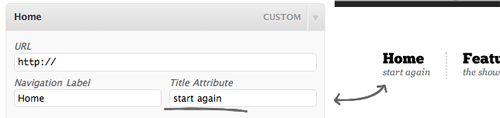
3. The Slider - top
Carta comes with two frontpage Sliders, the Carta Accordion and the amazing Nivo Slider from dev7studios. It also integrates a complete Slides Manager with a full Settings Panel for both sliders.
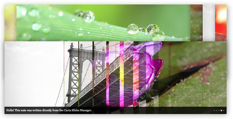
Switching Slider
You can switch from a Slider to another whenever you want from the tab, then selecting the slider that you prefer from the "Frontpage Slider" select box.
Slider Setup
Every action related to the selected Slider and its Slides is managed through the Slides Manager.
It is completely relative to the Slider Type you've chosen, so if you switch the Slider Type, you don't need to re-edit anything - every slide will be automatically re-adapted to the new Slider.
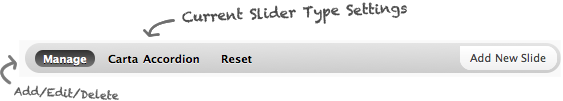
The Manage section is dedicated to every Slide management action. Let's see how it works and looks.
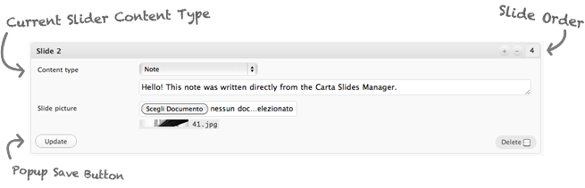
The Content Type let you choose the style of the content you want to add in your slide. For example, if you choose the Carta Accordion, there are two type of content: the Note which is made for short and concise comment and the Post-it for a more extensive description with links and more.
4. The Frontpage Content - top
With Carta, setting the Homepage Content is the most simple thing to do.
Create a new Page with anything you want, go to the Options Panel, select the tab and choose the page you just created from the select box "Take content from" under the "Frontpage" section.
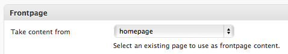
When the page you've chosen will be visualizated, it will automatically display the Homepage instead of the singular page.
5. The Footer - top
The Footer contains all the Copyright Informations and the Social Network Icons. You can find all the settings under the tab in your Options Panel.
The Social Network Icons are displayed automatically if you configure a social network account in the tab.
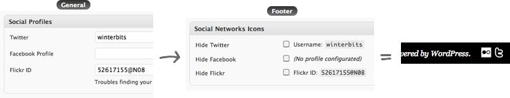
6. The Gallery - top
This theme includes a powerful Gallery system based on new WordPress features like Custom Post Types and Featured Images, so the overall managing is simpler than ever.
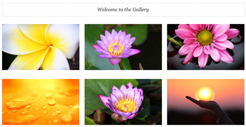
Creating the Gallery
To create the Gallery, the first thing you're going to do is create a new Page with any name, for example "My Gallery".
Then, you need to assign the Gallery Template to the page you've created, and you can do it in two ways:
- Via Options Panel under the tab.
- Through the WordPress Page editing and assigning to the page the Gallery Template.
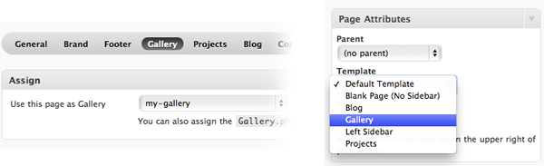
Adding a Box
To add something to your Gallery, select the Gallery menu, then "Add New Box".
A Gallery entry consists of a (optional) Title, a short Description and a Full Size Picture. So, the Title will be entered in the Title field, the Description as the Excerpt and the Picture will be the Featured Image.
To set the Featured Image, follow these steps:
- Click the "Set featured image" link on the right column
- Upload or choose a picture from your WordPress Media
- Select the size (usually Large or Full Size) then click "Use as featured image".
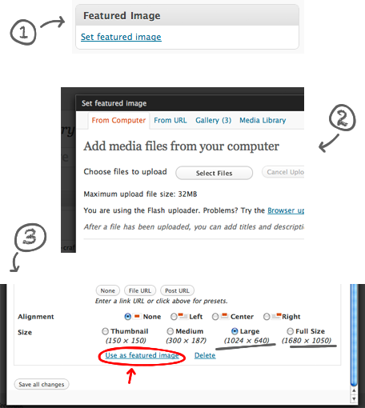
The Full Size Picture will be automatically resized and used as Thumbnail (you can disable this feature from the tab).
Adding a Video Box
To add a Video to your Gallery, follow the same procedure of a normal box then add a Custom Field named Media and paste your Youtube, Vimeo or Swf link. Carta will automatically create the Video Thumbnail.
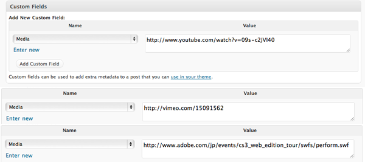
Using Custom Links
You can specify a Custom Link when adding a new entry if you don't need a Lightbox or you want to redirect the user to a more detailed description of the item. To do so, you need to add a Custom Field named Link and paste your link.
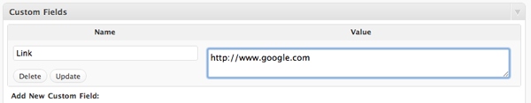
Creating a Lightbox Gallery
To create a Lightbox Navigation between zoomed Gallery pictures, you can specify a Custom Field named Gallery using the same value on the entries you want to link.
- Picture 1
Gallery: mygallery - Picture 2
Gallery: mygallery - Picture 3
Gallery: mygallery2 - Picture 4
Gallery: mygallery2
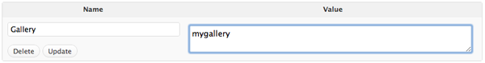
Using an different Lightbox Style
While you can choose to use two Lightbox Styles from the Options Panel, you may want to use a different one for a single Gallery item. To do that, you can add a Custom Field named Lightbox using "Zoom" or "Fullzoom" as value.
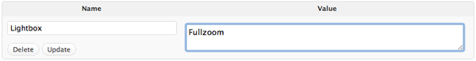
Using a custom Thumbnail Picture
To use a different Thumbnail Picture, you can specify a Custom Field named Thumbnail, using your Thumbnail Picture URL as value.
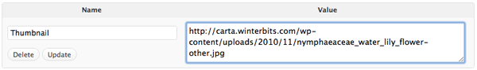
7. The Projects - top
The Projects section is dedicated to the presentation of your Portfolio, or simply anything that requires a strong presentation.
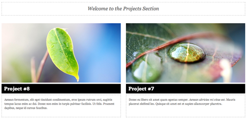
It is similiar to the Gallery, the differences are that any entry has its own page - in addition to the thumbnail - where you can add a more extensive Description, a longer Excerpt and a bigger thumbnail Picture.
Every setting regarding the Projects section is filed under the  tab.
tab.
Creating the Projects
To create the Projects section, the first thing you're going to do is create a new Page with any name, for example "Portfolio".
Now you need to assign the Projects Template to the page you've created, and you can do it in two ways:
- Via Options Panel under the tab.
- Through the WordPress Page editing and assigning to the page the Projects Template.
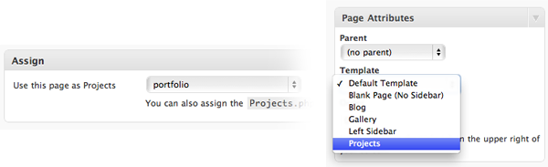
Adding a Project
To add a project to your Projects section (or Portfolio), click the "Add New" link under the Projects menu.
For instructions on how to set the Thumbnail picture, follow the steps in the Gallery section.
Using Custom Links
You can specify a Custom Link when adding a new entry if you want to redirect the user to another page. To do so, you need to add a Custom Field named Link and paste your link.
Using the Lightbox
If you just want to show an image rather than a detailed description about a Project, you can add a Custom Field named Lightbox and use as value "Zoom" or "Fullzoom".
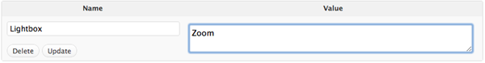
Using a custom Thumbnail Picture
To use a different Thumbnail Picture, you can specify a Custom Field named Thumbnail, using your Thumbnail Picture URL as value.
8. The Blog - top
One of the strongest feature of Carta is the Blog, because it wasn't conceived as an addition, but as a main feature with a different design and a unique way of browsing it with an always visible Toolbar (That you can disable, of course)
Every Blog Setting can be found in under the tab in your Options Panel.
Setting up the Blog
The Blog section process is the same of the Gallery and Projects so if you followed the previous steps I bet you can do everything without reading this guide :)
Create a new page with any name, then assign the Blog Template to that page.
You can assign a Section Template in two ways:
- Via Options Panel under the tab.
- Through the WordPress Page editing and assigning to the page the Blog Template.
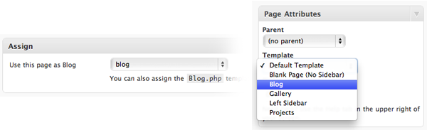
9. The Contact Form - top
Contrary to what you might think, this last step does not need much explanation because, with Carta, the only thing you need to do creating a Contact Page with a Contact Form, is this: [wb_contact-form]
This little and powerful Shortcode automatically creates a secure Contact Form using your email address, that you can configure in the tab - otherwise, the Administrator email will be used. (See the "Shortcodes" section if you want to use a different address for each Contact Form and more)
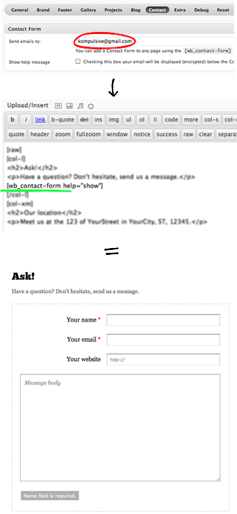
Shortcodes - top
Shortcodes help you to add simple to complex content to any page using a specific [command] enclosed between brackets.
This theme comes with many Shortcodes that are accessible directly from the WordPress editing page.
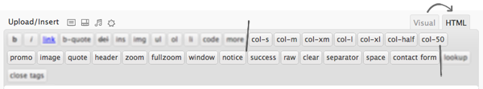
In this guide you'll find informations about the Shortcodes that needs a further documentation, omitting the basic ones like the [header]Header[/header] or the [intro]Intro[/intro].
Raw Formatting
To help you in the formatting of your content, WordPress automatically formats your code even if you're using the HTML mode. The problem is that sometimes it can be really annoying because it adds extra paragraphs that means extra space. To resolve this issue you can use the [raw] shortcode and wrap all your content in this shortcode.
[raw]
<h1>Some content</h1>
...
[/raw]Columns Shortcodes
This Theme comes with a series of shortcodes to help you in the creation of a custom layout.
Here's a list of the available column shortcodes:
[col-s]A 220 pixels wide column[col-m]300 pixels wide[col-xm]380 pixels wide[col-half]460 pixels wide[col-l]540 pixels wide[col-xl]700 pixels wide[col-50]50% of the container
While some columns are aligned by default to a side, you may want to align your column to a different side. To do that you can add the align property to any Column shortcode.
[col-l align="left"]
<h3>Col-l</h3>
[/col-l]
[col-xm align="right"]
<h3>Col-xm</h3>
[/col-xm]
[clear]You can use the [clear] shortcode to reset the floats.
Image Shortcode
With the [image] shortcode you can simple show any image, but you can also automatically resize it and align it to a side.
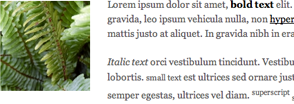
Through the size property you can resize your image using a preconfigured dimension like s, m, l or a custom, like 100x500.
[image]mypicture.jpg[/image][image size="m"]mypicture.jpg[/image][image align="left"]mypicture.jpg[/image][image size="l" align="left"]mypicture.jpg[/image][image size="100x500" align="right"]mypicture.jpg[/image]Project Picture Shortcode
The [project-image] shortcode automatically prints the Project Picture Url in the Project View page.
[image][project-image][/image]Notifications Shortcode
This Theme comes with a series of shortcodes to show notification messages. They are [notice], [success] and [error]. By default, every notification messages shows a close button on the upper right corner to hide the message itself. To make a notification message sticky and hide the close button, you can add the type property and set it to sticky.
[notice]Subscribe to my RSS feed[/notice][notice type="sticky"]Subscribe to my RSS feed[/notice][success]Your brain has been successfully mesmerized by Apple![/success][error]You Suck![/error]Accordion Shortcode
This Shortcode let you add a custom Carta Accordion in any page, in addition to the Frontpage Slider - and it is super easy.
A Shortcode Accordion consists in a container, [accordion] and slides [slides]. If you want to add content to your slide, you must use two parameters: type for the content style and cap for the content. The type property can be note or postit.
[accordion]
[slide type="note" cap="Hello!"]mypicture1.jpg[/slide]
[slide]mypicture2.jpg[/slide]
[slide type="postit" cap="Slide using the Post-it style"]mypicture3.jpg[/slide]
[/accordion]Lightbox Shortcodes
Carta includes 4 Lightbox Shortcodes, each one made for different uses.
The quick [zoom] shortcode made principally for image zooming, the [fullzoom] for content that requires a more emphasized presentation (darkens the background and uses a different zoom-out effect), [window] shortcode to display entire pages and [media] for videos and similiar.
While there is a specific lightbox shortcode to display pages, [window], you can use the type property and set it to iframe to display pages with the [zoom] and [fullzoom] shortcodes too.
[zoom href="mypicture.jpg"]Hyperlink[/zoom][zoom href="mypicture.jpg"]
[image size="s"]mypicture.jpg[/image]
[/zoom][fullzoom href="mypicture.jpg"]Hyperlink[/fullzoom][window href="http://www.google.com"]Hyperlink[/window][zoom type="iframe" href="http://www.google.com"]Hyperlink[/zoom][media href="http://www.youtube.com/watch?v=09s-c2JVI40"]Youtube[/media][media href="http://vimeo.com/11932087"]Vimeo[/media][media href="http://www.adobe.com/jp/events/cs3_web_edition_tour/swfs/perform.swf"]Swf[/media][media thumb="yes" href="http://www.youtube.com/watch?v=09s-c2JVI40"]Thumbnail Title[/media][media thumb="yes" href="http://vimeo.com/11932087"]Thumbnail Title[/media]Video Shortcodes
You can embed a video in any page using the [youtube] shortcode or [vimeo] shortcode. You just need to add the url of your video, without caring about the ID or stuff like that.
[youtube]http://www.youtube.com/watch?v=DX1iplQQJTo[/youtube][vimeo]http://vimeo.com/14958082[/vimeo][swf]http://www.adobe.com/jp/events/cs3_web_edition_tour/swfs/perform.swf[/swf]Contact Form Shortcode
This Theme includes a powerful and secure Contact Form system directly linked to the Options Panel, but at the same time completely indipendent and versatile.
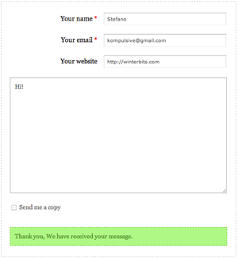
You can add a Contact Form to any page using the [wb_contact-form] shortcode.
The email address where the Contact Form will send the messages can be configurated in the tab of your Options Panel, if there is no email configurated, the Admin user address will be used.
So how to use a different email address for each contact form?
There are two configurable properties that you can use: email and help.
If you set the email property, the messages will be sended to that email address, if you set the help property to show a kind message will display the email (encrypted) where the contact form will send the emails, for people that do not like forms.
[wb_contact-form][wb_contact-form email="another@address.com"][wb_contact-form help="show"]Widgets - top
This Theme comes with 7 Custom Widgets and 5 available Widgets Areas to place them.
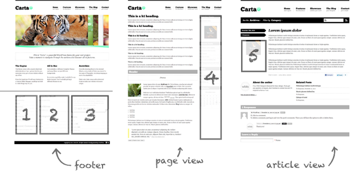
Carta Note
This custom Widget displays a short message with a link. It can be placed properly only in the Footer Right Area.
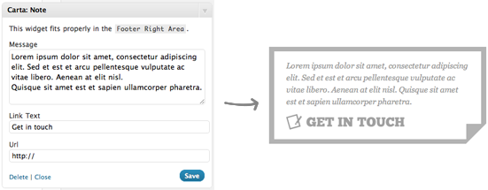
Tweets Stream Widget
This Widget simply displays the latest tweets of any account.
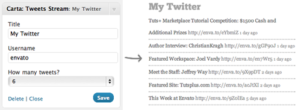
Flickr Photostream
You can use this Widget to display your Flickr account photos.
Popular Posts
This Widget displays a list of the posts with more comments.
Google Adsense
You can use this Widget to display your Google Adsense Advertising.
Advertisements
With this Widget you can add a custom Advertisement setting the Image and the Link you desire.
Video Embed
Using this Widget you can display a Youtube or Vimeo video in any Widget Area with just a couple clicks.
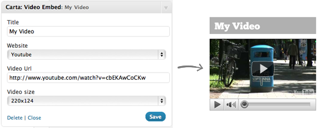
1. Creating a new Theme or Skin - top
One of the greatest feature of Carta is the versatility. It is possible because this Theme was built on a solid layout that is at the same time completely personalizable.
While you've got 5 Themes, you may want to add a new one , and you can do it very easly.
Theme System Explanation
A Carta Theme is a CSS file that contains all the color, font, background etc. properties that will be applied to the structure. So to add a new theme to the Theme Switcher list, you just need to create or move your CSS file to the themes folder and the Engine will automatically recognize the theme and list it.
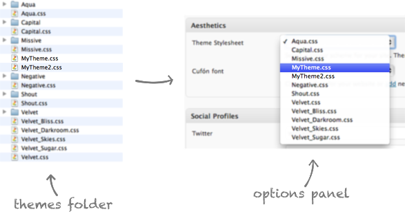
New Skin
Creating a completely new Theme needs time and you may want to make just some retouches to a Theme while using the same Graphics. You can do that just naming your CSS Theme File with an underscore _
So if you want to add a skin for the Shout Theme, you'll name your CSS file Shout_MySkin.css
Doing this, the Engine will automatically take all the images from the Shout folder.
2. Adding a new Font - top
This Theme uses the amazing Cufón Text Replacement to let you use any Font on your website without caring of the compatibility or stuff like that.
To add a new font, you need to use the Cufón Generator to convert your Font to a JS file. When the converting is completed, you just need to move the generated JS file in the Carta/js/fonts folder and Carta will automatically recognize it.
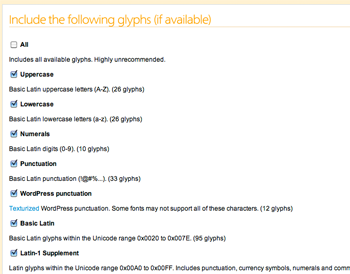
You can find many Fonts for Commercial Use on Font Squirrel, but I always recommend to take a look to the License and see if you can use it freely.
Page Samples - top
Creating a Page Template using the Column Shortcodes can be a little difficult for some users, that's why I've included some Page Samples that you can paste in your WordPress Page Editor to help you in the creation of a Custom Layout.
- Homepage Sample
homepage.txt - Half-page Columns Layout
col-half.txt - Two Columns Layout A
col-l_col-xm.txt - Two Columns Layout B
col-l_col-xm.txt - Three Columns
col-m.txt - Four Columns
col-s.txt
As you can see, just combining different Column Shortcodes you can create a infinite number of Layouts. The keys for a perfect result are the [raw] and the [clear] shortcode. See the Shortcodes for more informations about the Shortcodes.
CSS and jQuery - top
CSS Files
This Theme uses one main CSS file: structure.css
This file sets the main structure of the Theme and also includes the other necessary files. Here's a list of the files included through the structure file.
- reset.css (located in
/css)
Many browser interpret the default behavior of html elements differently. By using this resetCSSfile, we can work round this. - superfish.css (located in
/css)
TheCSSfile for the Superfish jQuery plugin, used for the dropdown menus. - css3.css (located in
/css)
ThisCSSfile adds some extra retouches using newCSS3features like shadows and animations. The con is that Old Browsers do not support this features. - jquery.fancybox-%.css (located in
/js/fancybox)
ThisCSSfile required for the FancyBox jQuery plugin. - nivo-slider.css (located in
/js/nivoslider)
ThisCSSfile required for the Nivo Slider jQuery plugin.
Every section of the structure.css file is delimited by a comment to help you find the exact part of the theme you want to edit.
/* Typography */
p {
font-size: 1.4em;
line-height: 1.5em;
padding-bottom: 20px;
}
...
/* Footer */
#footer {
width: 100%;
margin-top: 35px;
}
etc, etc.The other CSS files that Carta uses are the Theme files. They are all located in the themes folder and they contain all the color and image-related properties to applied on the structure.
/* Hyperlinks */
a {
color: #000;
}
...
/* Logo */
#head h1#logo {
background: url(Aqua/logo.png) no-repeat;
}
etc, etc.There's a last CSS file called ie.css used to fix all the Internet Explorer oddities and is included only if the visitor uses the malefic browser.
jQuery Scripts
This Theme imports a total of ten Javascript files, and some of them are included only in some cases.
- jquery.min.js
jQuery is a Javascript library that greatly reduces the amount of code that you must write. - jquery.wb_accordion.js
The Carta Accordion plugin. - jquery.nivo.slider.pack.js
The Nivo Slider plugin (included only if you selected it as Slider Type) - cufon-yui.js
Cufon is a text replacement plugin to use any font on your webpage. - jquery.easing.js
A jQuery plugin for advanced animations (optional) - superfish.js
CSS & jQuery Dropdown Menu - jquery.fancybox.pack.js
FancyBox is a tool to show content in a Mac-style "lightbox" that floats overtop of web page. - init.js
This file enables all the plugins mentioned before and also includes many great features like the Contact Form System or the Gallery and Projects animations.
There's a last Javascript file called DD_belatedPNG_%-min.js used to enable the PNG Transparency on Internet Explorer and is included only if the visitor uses the malefic browser.
PSD Sources - top
Mostly any structure image used to create this Theme is available as PSD source file.
I've included 13 sliced psds and all the Full Page sources for the Aqua Theme.
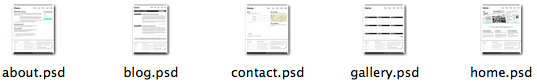
The sliced psd files are the same I've used to code this theme, so you don't need to resize or rename any image you want to edit. Just save them as the same file type of the original.
Extras - top
To help you in the creation of your beautiful website, I've also included 10 High Res Backgrounds that you can use anywhere and how you want. No restrictions.
Ending Credits - top
Here's a list of all the external stuff that helped me a lot in the creation of Carta with some useful links.
- Pictures from photos8.com, tambako and Simon Bouchard
- Eric Meyer CSS Reset
- jQuery
- Superfish - Options
- Cufón - Documentation
- Bebas font
- ChunkFive font
- Colaborate font
- District Thin font
- Lane font
- Bigelow & Holmes Luxi Sans font
- Museo, Museo Sans and Museo Slab fonts
- Nevis font
- PT Sans font
- Quicksand font
- Bernd Montag Sansation font
- DD_belatedPNG
- FancyBox - Options
- hoverIntent
- jQuery Easing
- Nivo Slider
- TimThumb
Once again, thank you for buying Carta. As I said at the beginning, I'd be glad to help you if you have any questions relating to this theme. No guarantees, but I'll do my best to assist.
Stefano Giliberti